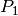

Build a finite element method on a mesh¶
The object getfem::mesh_fem defined in getfem/getfem_mesh_fem.h is designed to describe a finite element method on a whole mesh, i.e. to describe the finite element space on which some variables will be described. This is a rather complex object which is central in GetFEM++. Basically, this structure describes the finite element method on each element of the mesh and some additional optional transformations. It is possible to have an arbitrary number of finite element descriptions for a single mesh. This is particularly necessary for mixed methods, but also to describe different data on the same mesh. One can instantiate a getfem::mesh_fem object as follows:
getfem::mesh_fem mf(mymesh);
where mymesh is an already existing mesh. The structure will be linked to this mesh and will react when modifications will be done on it.
It is possible to specify element by element the finite element method, so that element of mixed types can be treated, even if the dimensions are different. For usual elements, the connection between two elements is done when the two elements are compatibles (same degrees of freedom on the common face). A numeration of the degrees of freedom is automatically done with a Cuthill Mc Kee like algorithm. You have to keep in mind that there is absolutely no connection between the numeration of vertices of the mesh and the numeration of the degrees of freedom. Every getfem::mesh_fem object has its own numeration.
There are three levels in the getfem::mesh_fem object:
- The element level: one finite element method per element. It is possible to mix the dimensions of the elements and the property to be vectorial or scalar.
- The optional vectorization/tensorization (the qdim in getfem jargon, see vocabulary). For instance to represent a displacement or a tensor field in continuum mechanics. Scalar elements are used componentwise. Note that you can mix some intrinsic vectorial elements (Raviart-Thomas element for instance) which will not be vectorized and scalar elements which will be.
- (GetFEM++ version 4.0) The optional additional linear transformation (reduction) of the degrees of freedom. It will consist in giving two matrices, the reduction matrix and the extension matrix. The reduction matrix should transform the basic dofs into the reduced dofs (the number of reduced dofs should be less or equal than the number of basic dofs). The extension matrix should describe the inverse transformation. The product of the reduction matrix with the extension matrix should be the identity matrix (ensuring in particular that the two matrices are of maximal rank). This optional transformation can be used to reduce the finite element space to a certain region (tipically a boundary) or to prescribe some matching conditions between non naturally compatible fems (for instance fems with different degrees).
One has to keep in mind this construction manipulating the degrees of freedom of a getfem::mesh_fem object.
First level: manipulating fems on each elements¶
To select a particular finite element method on a given element, use the method:
mf.set_finite_element(i, pf);
where i is the index of the element and pf is the descriptor (of type getfem::pfem, basically a pointer to an object which inherits from getfem::virtual_fem) of the finite element method. Alternative forms of this member function are:
void mesh_fem::set_finite_element(const dal::bit_vector &cvs,
getfem::pfem pf);
void mesh_fem::set_finite_element(getfem::pfem pf);
which set the finite elements for either the convexes listed in the bit_vector cvs, or all the convexes of the mesh. Note that the last method makes a call to the method:
void mesh_fem::set_auto_add(pfem pf);
which defines the default finite element method which will be automatically added on new elements of the mesh (this is very useful, for instance, when a refinement of the mesh is performed).
Descriptors for finite element methods and integration methods are available thanks to the following function:
getfem::pfem pf = getfem::fem_descriptor("name of method");
where "name of method" is to be chosen among the existing methods. A name of a method can be retrieved thanks to the following functions:
std::string femname = getfem::name_of_fem(pf);
A non exhaustive list (see Appendix A. Finite element method list or getfem/getfem_fem.h for exhaustive lists) of finite element methods is given by:
- "FEM_PK(n,k)": Classical
 methods on simplexes of dimension n
with degree k polynomials.
methods on simplexes of dimension n
with degree k polynomials. - "FEM_QK(n,k)": Classical
 methods on parallelepiped of dimension
n. Tensorial product of degree k method on the segment.
methods on parallelepiped of dimension
n. Tensorial product of degree k method on the segment. - "FEM_PK_PRISM(n,k)": Classical methods on prism of dimension n.
Tensorial product of two degree k method.
- "FEM_PRODUCT(a,b)": Tensorial product of the two polynomial finite element method a and b.
- "FEM_PK_DISCONTINUOUS(n,k)": discontinuous methods on simplexes
of dimension n with degree k polynomials.
An alternative way to obtain a Lagrange polynomial fem suitable for a given geometric transformation is to use:
getfem::pfem getfem::classical_fem(bgeot::pgeometric_trans pg,
short_type degree);
getfem::pfem getfem::classical_discontinuous_fem(bgeot::pgeometric_trans pg,
short_type degree);
The mesh_fem can call directly these functions via:
void mesh_fem::set_classical_finite_element(const dal::bit_vector &cvs,
dim_type fem_degree);
void mesh_fem::set_classical_discontinuous_finite_element(const dal::bit_vector &cvs,
dim_type fem_degree);
void mesh_fem::set_classical_finite_element(dim_type fem_degree);
void mesh_fem::set_classical_discontinuous_finite_element(dim_type fem_degree);
Some other methods:
- mf.convex_index()¶
Set of indexes (a dal::bit_vector) on which a finite element method is defined.
- mf.linked_mesh()¶
gives a reference to the linked mesh.
- mf.fem_of_element(i)¶
gives a descriptor on the finite element method defined on element of index i (does not take into account the qdim nor the optional reduction).
- mf.clear()¶
Clears the structure, no finite element method is still defined.
Examples¶
For instance if one needs to have a description of a  finite element method on a triangle, the way to set it is:
mf.set_finite_element(i, getfem::fem_descriptor("FEM_PK(2, 1)"));
where i is still the index of the triangle. It is also possible to select a particular method directly on a set of element, passing to mf.set_finite_element a dal::bit_vector instead of a single index. For instance:
mf.set_finite_element(mymesh.convex_index(),
getfem::fem_descriptor("FEM_PK(2, 1)"));
selects the method on all the elements of the mesh.
Second level: the optional “vectorization/tensorization”¶
If the finite element represents an unknown which is a vector field, the method mf.set_qdim(Q) allows set the target dimension for the definition of the
target dimension  .
.
If the target dimension is set to a value different of , the
scalar FEMs (such as  fems etc.) are automatically “vectorized” from
the mesh_fem object point of view, i.e. each scalar degree of freedom appears
times in order to represent the components of the vector field. If an
intrinsically vectorial element is used, the target dimension of the fem and
the one of the mesh_fem object have to match. To sum it up,
fems etc.) are automatically “vectorized” from
the mesh_fem object point of view, i.e. each scalar degree of freedom appears
times in order to represent the components of the vector field. If an
intrinsically vectorial element is used, the target dimension of the fem and
the one of the mesh_fem object have to match. To sum it up,
if the fem of the element is intrinsically a vector FEM, then:
mf.get_qdim() == mf.fem_of_element(i)->target_dim() && mf.nb_dof_of_element(i) == mf.fem_of_element(i).nb_dof()
if the fem has a target_dim equal to , then:
mf.nb_dof_of_element(i) == mf.get_qdim()*mf.fem_of_element(i).nb_dof()
Additionally, if the field to be represented is a tensor field instead of a vector field (for instance the stress or strain tensor field in elasticity), it is possible to specify the tensor dimensions with the methods:
mf.set_qdim(dim_type M, dim_type N)
mf.set_qdim(dim_type M, dim_type N, dim_type O, dim_type P)
mf.set_qdim(const bgeot::multi_index &mii)
respectively for a tensor field of order two, four and arbitrary (but limited to 6). For most of the operations, this is equivalent to declare a vector field of the size the product of the dimensions. However, the declared tensor dimensions are taken into account into the high level generic assembly. Remember that the components inside a tensor are stored in Fortran order.
At this level are defined the basic degrees of freedom. Some methods of the getfem::mesh_fem allows to obtain information on the basic dofs:
- mf.nb_basic_dof_of_element(i)¶
gives the number of basic degrees of freedom on the element of index i.
- mf.ind_basic_dof_of_element(i)¶
gives a container (an array) with all the global indexes of the basic degrees of freedom of element of index i.
- mf.point_of_basic_dof(i, j)¶
gives a bgeot::base_node which represents the point associated with the basic dof of local index j on element of index i.
- mf.point_of_basic_dof(j)
gives a bgeot::base_node which represents the point associated with the basic dof of global index j.
- mf.reference_point_of_basic_dof(i, j)¶
gives a bgeot::base_node which represents the point associated with the basic dof of local index j on element of index i in the coordinates of the reference element.
- mf.first_convex_of_basic_dof(j)¶
gives the index of the first element on which the basic degree of freedom of global index j is defined.
- mf.nb_basic_dof()¶
gives the total number of different basic degrees of freedom.
- mf.get_qdim()¶
gives the target dimension Q.
- mf.basic_dof_on_region(i)¶
Return a dal::bit_vector which represents the indices of basic dof which are in the set of convexes or the set of faces of index i (see the getfem::mesh object).
- mf.dof_on_region(i)¶
Return a dal::bit_vector which represents the indices of dof which are in the set of convexes or the set of faces of index i (see the getfem::mesh object). For a reduced mesh_fem, a dof is lying on a region if its potential corresponding shape function is nonzero on this region. The extension matrix is used to make the correspondence between basic and reduced dofs.
Third level: the optional linear transformation (or reduction)¶
As described above, it is possible to provide two matrices, a reduction matrix
and an extension matrix  which will describe a linear
transformation of the degrees of freedom. If
which will describe a linear
transformation of the degrees of freedom. If  is the vector of basic
degrees of freedom, then will be the vector of reduced degrees of
freedom. Contrarily, given a vector
is the vector of basic
degrees of freedom, then will be the vector of reduced degrees of
freedom. Contrarily, given a vector  of reduced dof, will
correspond to a vector of basic dof. In simle cases, will be simply the
transpose of . NOTE that every line of the extension matrix should be
sparse. Otherwise, each assembled matrix will be plain !
of reduced dof, will
correspond to a vector of basic dof. In simle cases, will be simply the
transpose of . NOTE that every line of the extension matrix should be
sparse. Otherwise, each assembled matrix will be plain !
A natural condition is that where is the identity matrix.
- mf.nb_dof()¶
gives the total number of different degrees of freedom. If the optional reduction is used, this will be the number of columns of the reduction matrix. Otherwise it will return the number of basic degrees of freedom.
- mf.is_reduced()¶
return a boolean. True if the reduction is used.
- mf.reduction_matrix()¶
return a const reference to the reduction matrix .
- mf.extension_matrix()¶
return a const reference to the extension matrix
.
- mf.set_reduction_matrices(R, E)¶
Set the reduction and extension matrices to R and E and validate their use.
- mf.set_reduction(b)¶
Where is a boolean. Cancel the reduction if is false and validate it if b is true. If b is true, the extension and reduction matrices have to be set previously.
- mf.reduce_to_basic_dof(idof)¶
Set the reduction and extension matrices corresponding to keep only the basic dofs present in idof. The parameter idof is either a dal::bit_vector or a std::set<size_type>. This is equivalent to the use of a getfem::partial_mesh_fem object.
Obtaining generic mesh_fem‘s¶
It is possible to use the function:
const mesh_fem &getfem::classical_mesh_fem(const getfem::mesh &mymesh, dim_type K);
to get a classical polynomial mesh_fem of order  on the given mymesh.
The returned mesh_fem will be destroyed automatically when its linked mesh is
destroyed. All the mesh_fem built by this function are stored in a cache, which means
that calling this function twice with the same arguments will return the same mesh_fem
object. A consequence is that you should NEVER modify this mesh_fem!
on the given mymesh.
The returned mesh_fem will be destroyed automatically when its linked mesh is
destroyed. All the mesh_fem built by this function are stored in a cache, which means
that calling this function twice with the same arguments will return the same mesh_fem
object. A consequence is that you should NEVER modify this mesh_fem!
The partial_mesh_fem object¶
The getfem::partial_mesh_fem object defined in the file getfem_partial_mesh_fem.h allows to reduce a getfem::mesh_fem object to a set of dofs. The interest is this is not a complete description of a finite element method, it refers to the original getfem::mesh_fem and just add reduction and extension matrices. For instance, you can reduce a mesh_fem obtained by the function getfem::classical_mesh_fem(mesh, K) to obtain a finite element method on a mesh region (which can be a boundary). The getfem::partial_mesh_fem is in particular used to obtain multiplier description to prescribed boundary conditions.
The declaration of a getfem::partial_mesh_fem object is the following:
getfem::partial_mesh_fem partial_mf(mf);
Then, one has to call the adapt method as follows:
partial_mf.adapt(kept_dof, rejected_elt = dal::bit_vector());
where kept_dof and rejected_elt are some dal::bit_vector. kept_dof is the list of dof indices of the original mesh_fem mf to be kept. rejected_elt is an optional parameter that contains a list of element indices on which the getfem::partial_mesh_fem states that there is no finite element method. This is to avoid unnecessary computations during assembly procedures.

目次
前のトピックへ
次のトピックへ
Download
Main documentations
- GetFEM++ User documentation
- Python Interface
- Matlab Interface
- Scilab Interface
- Gmm++
- GetFEM++ project